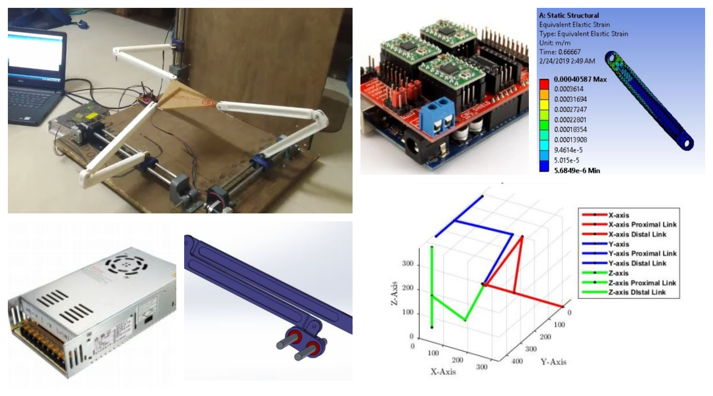

My undergrad thesis
The rite of passage into engineering graduation at NITK includes a year-long thesis, with a random team, under the guidance of a gruntled professor. A 'simulation' based thesis has become a norm in mechanical departments everywhere because of it's ease and convenience by averting the usual tassles of hardware. I was fortunate enough to find a team that reflected my desire of developing an actual working system. With this drive, we set out to develop a 3-PRRR parallel link manipulator
A manipulator is a sub-class of robot that doesn't have locomotive capabilities, it stays in one place and produeces required movements. CNC machines, 3-D printers, robotic arms, assembly robots are few notable manipulators around. A parallel link manipulator on the other hand unlike a serial link robotic arm is much rarer and has more specific applications. We developed a parallel link manipulator using 3 decoupled arms each ran using a independent motor. Our aim was to generate some physical mass optimization in the arm design and also optimisation in the code, so that the entire system can be run on a common development microcontroller.
The project was much more difficult than anticipated but we could present the model in due time with the planned position and velocity control. This and the detailed documentation earned our team a perfect grade in both semesters.